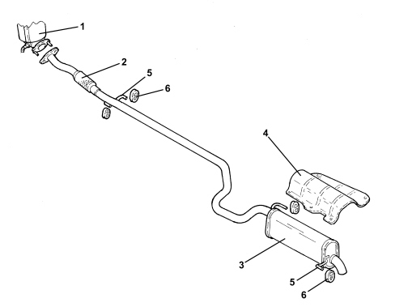

INTRODUCTION - EXHAUST PIPES AND SILENCERS
- Path
- Descriptions > 10 ENGINE > 1076 EXHAUST PIPES AND SILENCERS > INTRODUCTION - EXHAUST PIPES AND SILENCERS
- Kind
- system description
- Applies to
- engines: 1.4 8v; all production periods
- Interactive page
- https://sloeber94.github.io/elrnDB-fDbl/en/#/223000216
Applies to: engines: 1.4 8v; all production periods
CONSTRUCTION SPECIFICATIONS
The engine exhaust gases flow to the manifold - three-way catalytic converter assembly (1).
There is a flexible element (2) in the front section of the exhaust pipe to restrict the transmission of vibrations.
The rear exhaust pipe section consists of a silencer (3).
A special guard (4) prevents heat radiating toward the body.
The various components are supported by means of supports (5) and flexible seals (6) fastened to the underbody.
